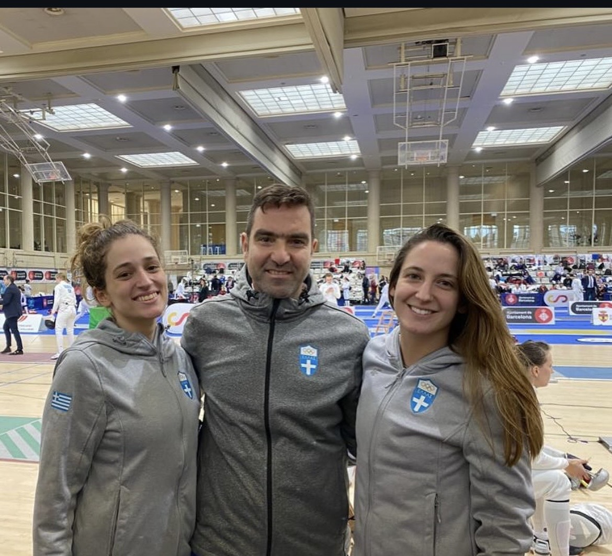

ΤΕΛΟΣ ΕΠΟΧΗΣ. ΝΕΑ ΖΩΗ ΣΤΑ ΠΡΑΣΙΝΑ.

Η Ανδριάνα Θεοδωροπούλου και η Νικολέτα Χατζησαράντου έχουν μοιραστεί αγώνες, ταξίδια, προπονήσεις, χαρές, απογοητεύσεις και αμέτρητες ώρες μέσα στις αίθουσες ξιφασκίας. Αυτή τη φορά όμως η σημαντικότερη κοινή τους στιγμή δεν ήρθε πάνω στην πίστα.
Ήρθε με μία απόφαση. Να κλείσουν έναν κύκλο και να ανοίξουν έναν καινούριο.
Η ΑΠΟΦΑΣΗ ΠΟΥ ΩΡΙΜΑΖΕ ΚΑΙΡΟ
Το τελευταίο διάστημα στον Άρη Παιανίας είχε δημιουργηθεί ένα δύσκολο κλίμα. Οι σχέσεις είχαν αλλάξει, οι εντάσεις είχαν αυξηθεί και η καθημερινότητα των αθλητριών είχε αρχίσει να απέχει αρκετά από αυτό που οι ίδιες ήθελαν για την αθλητική τους εξέλιξη.
Στο επίκεντρο βρισκόταν και η σχέση τους με τον τότε προπονητή Γιώργο Πασσά. Μια συνεργασία που, στο πλαίσιο αυτής της σατιρικής ιστορίας, παρουσιάζεται να έχει φτάσει σε σημείο χωρίς επιστροφή.

Η ΡΗΞΗ ΗΤΑΝ ΠΛΕΟΝ ΑΝΑΠΟΦΕΥΚΤΗ
Προπονητική πίεση, διαφορετικές αντιλήψεις, συνεχείς εντάσεις και ένα περιβάλλον που οι δύο αθλήτριες αισθάνονταν ότι δεν τις εξέφραζε πλέον. Η κατάσταση είχε αρχίσει να επηρεάζει όχι μόνο την καθημερινότητά τους αλλά και τη μεταξύ τους ισορροπία.
«Κάποια στιγμή καταλαβαίνεις ότι δεν χρειάζεσαι άλλη υπομονή. Χρειάζεσαι αλλαγή.»
— ΤΟ MOOD ΤΗΣ ΜΕΤΑΓΡΑΦΗΣΑΠΟ ΤΙΣ ΚΟΝΤΡΕΣ ΣΤΗΝ ΚΟΙΝΗ ΑΠΟΦΑΣΗ
Ακόμα και η σχέση των δύο κοριτσιών δοκιμάστηκε. Η πίεση μιας δύσκολης αθλητικής καθημερινότητας μπορεί εύκολα να δημιουργήσει αποστάσεις, παρεξηγήσεις και ανταγωνισμό εκεί που κάποτε υπήρχε μόνο φιλία.
Όμως τελικά συνέβη το αντίθετο. Αντί να χωρίσουν οι δρόμοι τους, οι δύο αθλήτριες αποφάσισαν να τους ενώσουν ακόμα περισσότερο.
.jpeg)
ΤΟ ΧΡΟΝΙΚΟ ΜΙΑΣ ΜΕΓΑΛΗΣ ΑΛΛΑΓΗΣ
ΚΑΙ ΜΕΤΑ ΗΡΘΕ Ο ΠΑΝΑΘΗΝΑΪΚΟΣ
Η επιλογή του Παναθηναϊκού σηματοδοτεί κάτι περισσότερο από μία απλή αλλαγή συλλόγου. Για τις δύο αθλήτριες συμβολίζει μία επανεκκίνηση.
Ένα περιβάλλον όπου η προπόνηση μπορεί ξανά να γίνει αυτό που πρέπει να είναι: χώρος δουλειάς, εξέλιξης, φιλοδοξίας και κυρίως αθλητικής χαράς.
«Νέα ομάδα. Νέοι στόχοι. Ίδια δίψα. Και αυτή τη φορά, μαζί.»
— ΝΕΑ ΣΕΛΙΔΑ
.jpeg)

ΑΠΟ ΣΥΝΑΘΛΗΤΡΙΕΣ. ΣΕ ΣΥΜΜΑΧΟΥΣ.
Πίσω από κάθε μεταγραφή υπάρχουν αποτελέσματα, συζητήσεις και αποφάσεις. Πίσω από αυτήν υπάρχουν όμως και χρόνια κοινών εμπειριών.
Οι δυο τους έχουν βρεθεί μαζί σε διοργανώσεις, σε προπονήσεις, σε ταξίδια της Εθνικής και σε στιγμές που ελάχιστοι έξω από τον χώρο μπορούν να καταλάβουν.
ΘΕΟΔΩΡΟΠΟΥΛΟΥ

ΧΑΤΖΗΣΑΡΑΝΤΟΥ
ΤΟ ΤΕΛΕΥΤΑΙΟ ΚΕΦΑΛΑΙΟ
Κάπως έτσι, μια ιστορία που ξεκίνησε με ένταση καταλήγει σε μια από τις μεγαλύτερες αλλαγές της κοινής αθλητικής τους πορείας.
Δεν είναι απλώς δύο μεταγραφές.
Είναι δύο αθλήτριες που αποφάσισαν ότι η επόμενη σελίδα τους θα γραφτεί διαφορετικά.
Και θα γραφτεί στα πράσινα.
NEW CLUB.
NEW ERA.
SAME GIRLS.
Ανδριάνα Θεοδωροπούλου × Νικολέτα Χατζησαράντου.
Μαζί μέχρι την επόμενη πίστα.